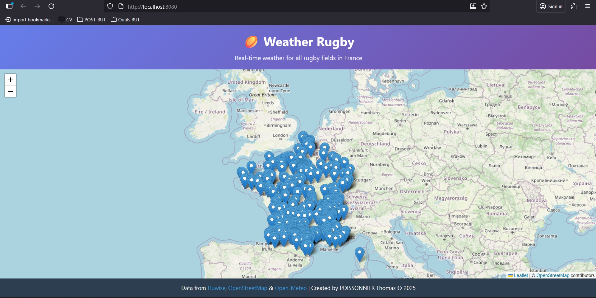
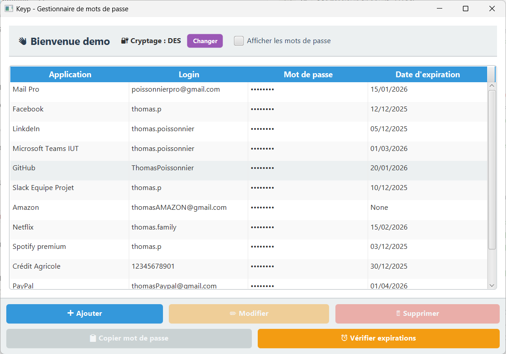

Skills Portfolio

Newspaper Front Page
Illustration of the concept of common cultural reference
Communication
Graphic Design
Writing

Comparative Algorithm Study
Qualitative comparison of sorting algorithms
C++
Algorithms
Performance Analysis

Organizational Analysis of a Company
Analysis of LeBonCoin's organization and operations
Digital Economy
Communication
IS Management

Route Calculator
Optimized route calculation application
C++
Qt
Dijkstra
Database

Requirements Document
Creation of a complete requirements document for a fictitious application
Project Documentation
Teamwork
Application Development

Recipe Library
Recipe management application
C++
Qt
GUI

Weather Rugby
Web application displaying rugby fields in France with their weather
HTML/CSS/JavaScript
Database

Keyp
Password Manager
Java
GUI
Cryptography